Type F: Toyota Yaris Hatch 5Dr, [24- ] Bracket-2, Acoustic, HUD, ADAS 1CAM, Topside Mould, Camera Frame Heating
📞 Call 0800 757-985 about Type FSmall car, sorted fast. Toyota Yaris windscreen and door glass replacement across Auckland — mobile service, insurance handled.
Toyota Yaris Windscreens by Model
Not sure which one you have? Call us on 0800 757-985 with your year and what you can see behind the mirror, and we'll confirm the right windscreen for your Yaris.
Type F: Toyota Yaris Hatch 5Dr, [24- ] Bracket-2, Acoustic, HUD, ADAS 1CAM, Topside Mould, Camera Frame Heating
📞 Call 0800 757-985 about Type F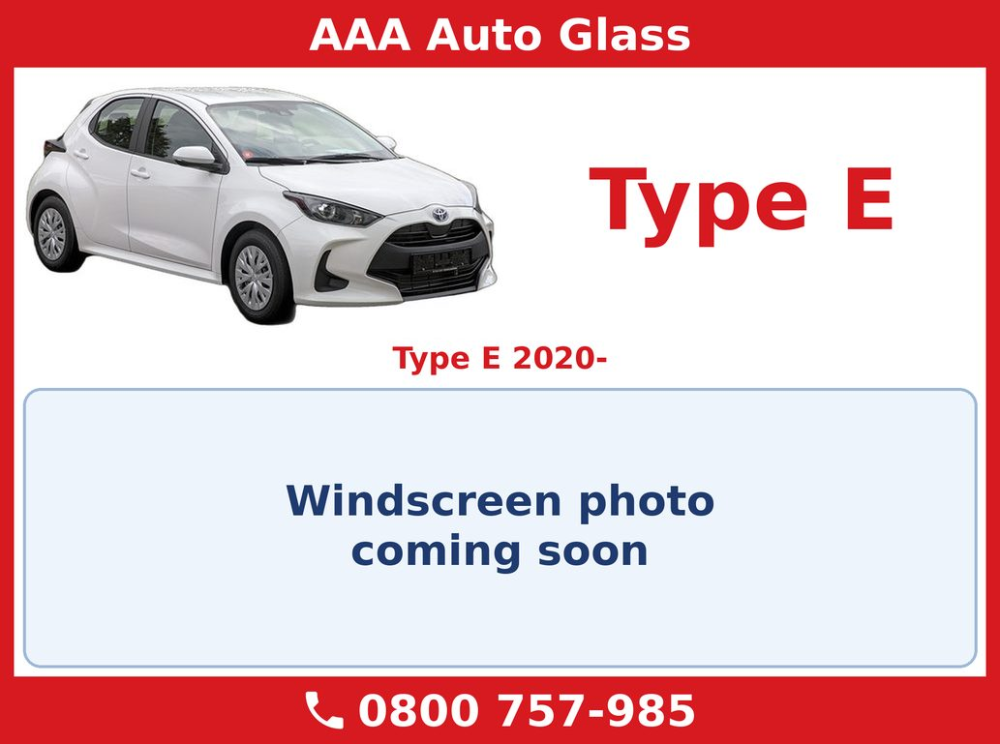
Type E: Toyota Yaris Hatch 5Dr, [24- ] Bracket-2, Acoustic, ADAS 1CAM, Topside Mould, Camera Frame Heating
📞 Call 0800 757-985 about Type EType D: Toyota Yaris Hatch 5Dr, [20- ] Bracket, Acoustic, Solar Tint, HUD, ADAS 1CAM, Topside Moulds
📞 Call 0800 757-985 about Type D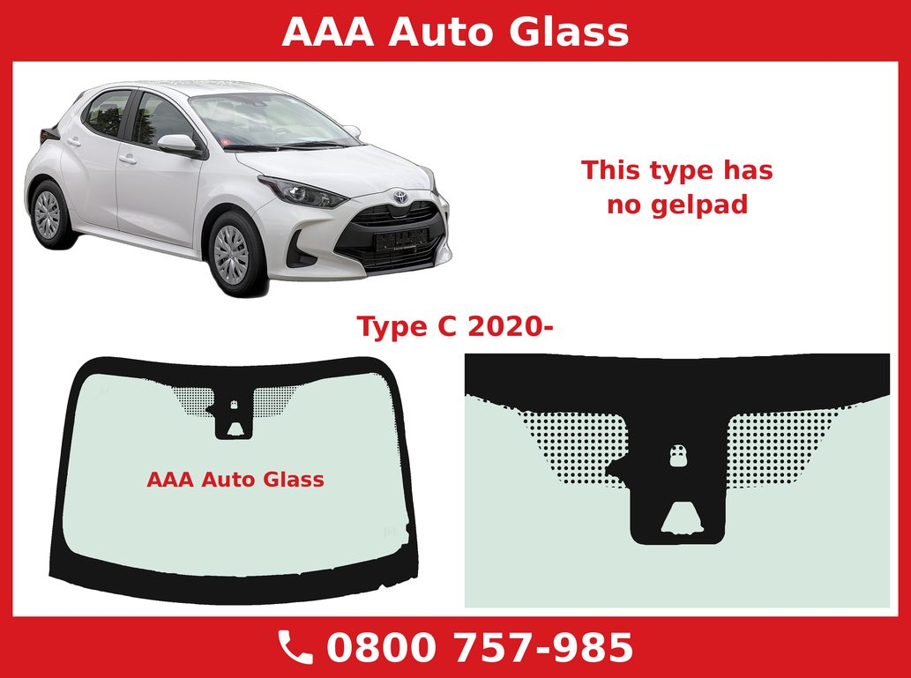
Type C: Toyota Yaris Hatch 5Dr, [20- ] Bracket, Solar Tint, ADAS 1CAM, Topside Mould
📞 Call 0800 757-985 about Type C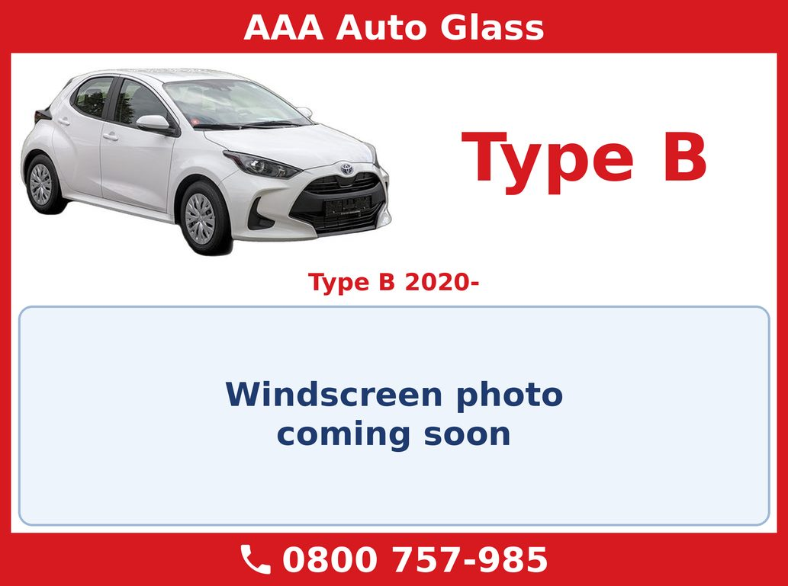
Type B: Toyota Yaris Hatch 5Dr, [20- ] Antenna, Bracket, Acoustic, HUD, ADAS 1CAM, Topside Mould
📞 Call 0800 757-985 about Type B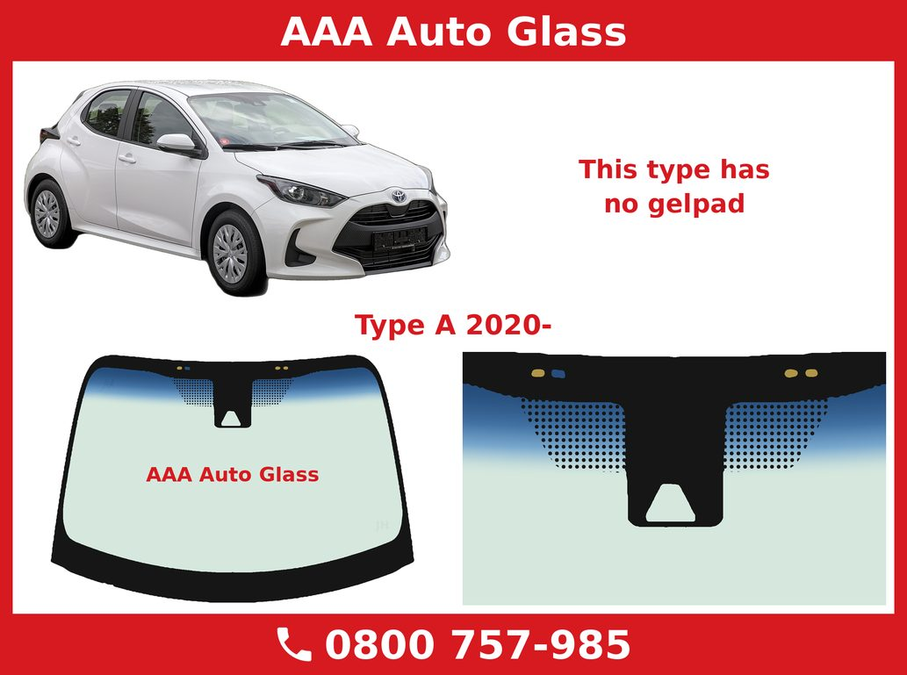
Type A: Toyota Yaris Hatch 5Dr, [20- ] Antenna, Bracket, ADAS 1CAM, Topside Mould
📞 Call 0800 757-985 about Type ANot sure which one you have? Call us on 0800 757-985 with your year and what you can see behind the mirror, and we'll confirm the right windscreen for your Yaris.
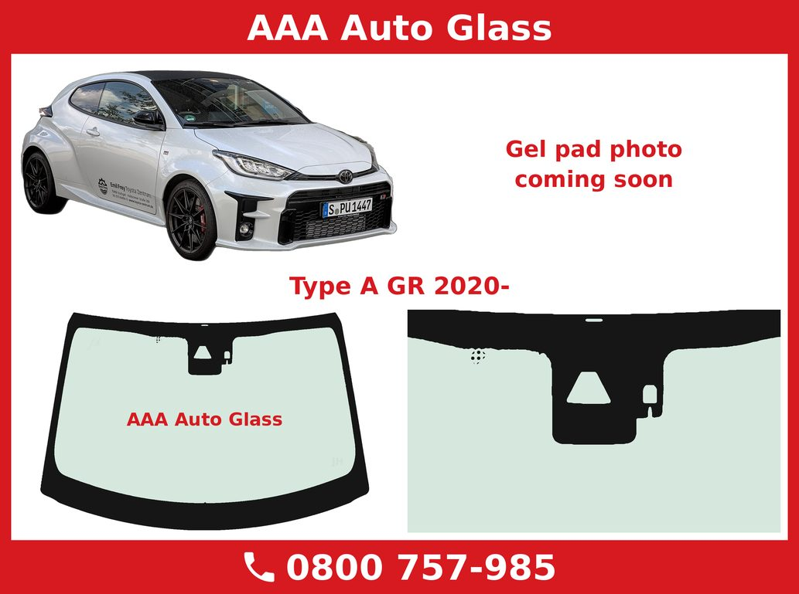
Type A: Toyota Yaris GR Hatch 3Dr, [20- ] Rain Sensor, Bracket, Acoustic, HUD, ADAS 1CAM, ADAS Film Heat
📞 Call 0800 757-985 about Type ANot sure which one you have? Call us on 0800 757-985 with your year and what you can see behind the mirror, and we'll confirm the right windscreen for your Yaris.
Type D: Toyota Yaris Hatch 3/5Dr, [17- ] Bracket, Solar Tint, ADAS1 (Bottom Small Cut Out), (With VIN Slot)
📞 Call 0800 757-985 about Type DType C: Toyota Yaris Hatch 3/5Dr, [17- ] Bracket, ADAS1 (Bottom Large Cut Out), (Without VIN Slot), Mould
📞 Call 0800 757-985 about Type C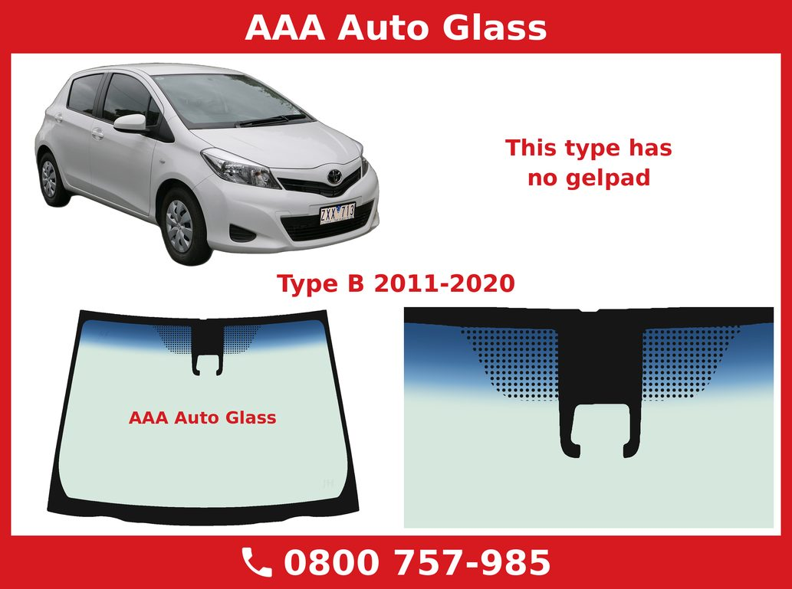
Type B: Toyota Yaris Hatch 3/5Dr, [17- ] Bracket, ADAS1 (Bottom Large Cut Out), (Without VIN Slot)
📞 Call 0800 757-985 about Type B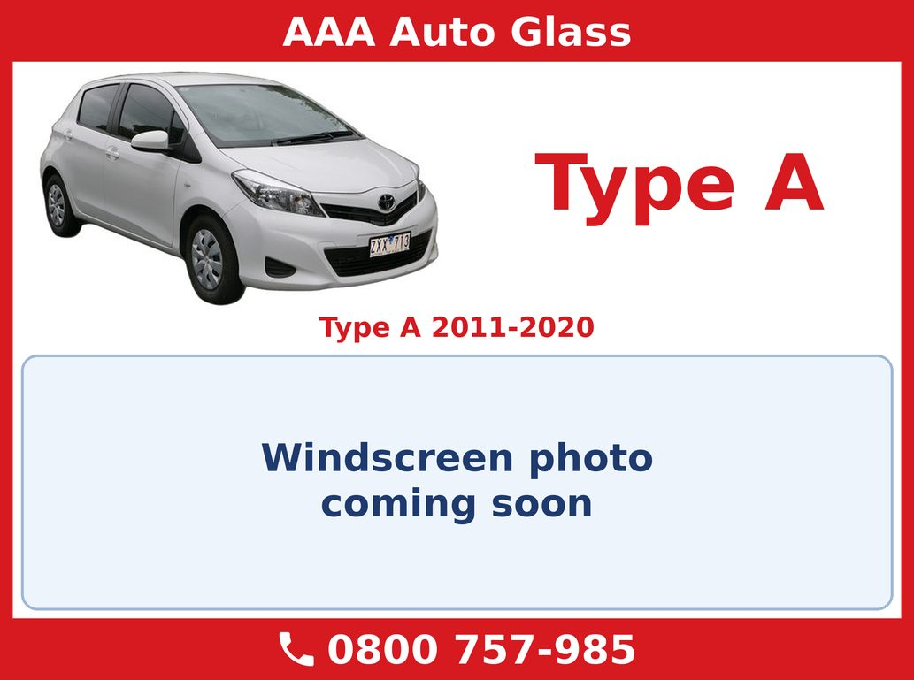
Type A: Toyota Yaris Hatch 3/5Dr, [11- ]
📞 Call 0800 757-985 about Type ANot sure which one you have? Call us on 0800 757-985 with your year and what you can see behind the mirror, and we'll confirm the right windscreen for your Yaris.
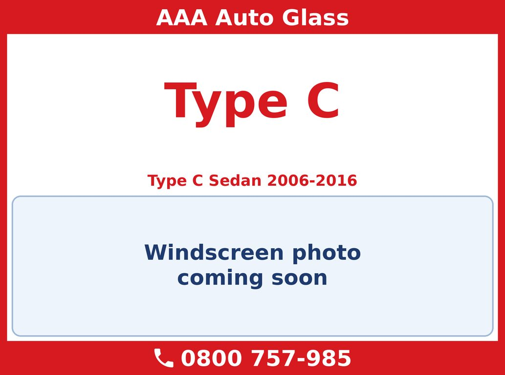
Type C: Toyota Yaris 4Dr Sedan, [13- ] (MLD)
📞 Call 0800 757-985 about Type C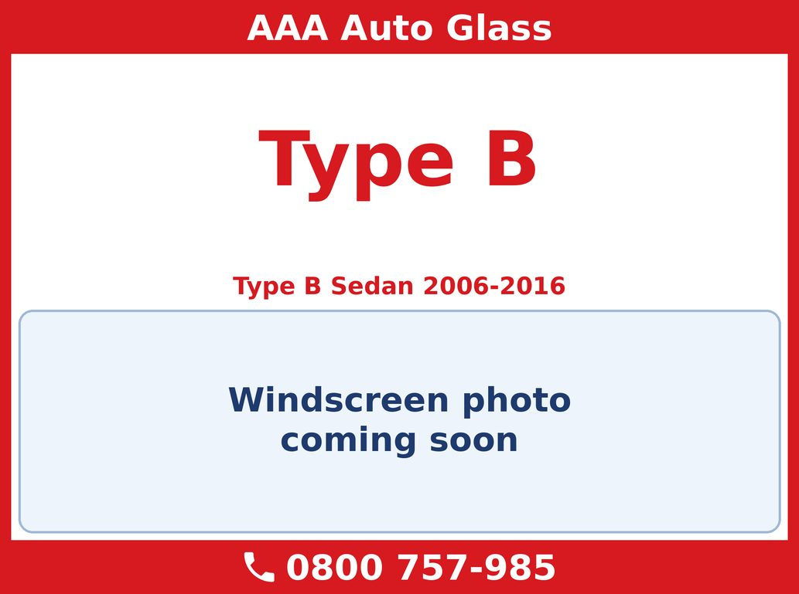
Type B: Toyota Yaris Sedan, [13- ]
📞 Call 0800 757-985 about Type B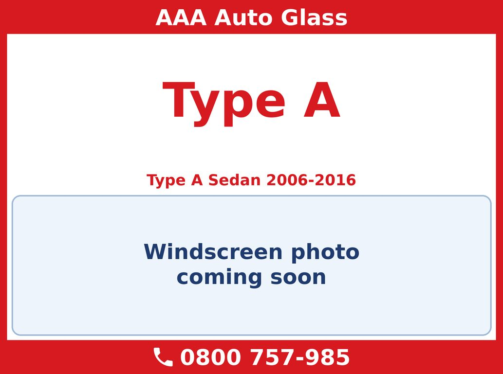
Type A: Toyota Yaris Sedan, [05- ]
📞 Call 0800 757-985 about Type ANot sure which one you have? Call us on 0800 757-985 with your year and what you can see behind the mirror, and we'll confirm the right windscreen for your Yaris.
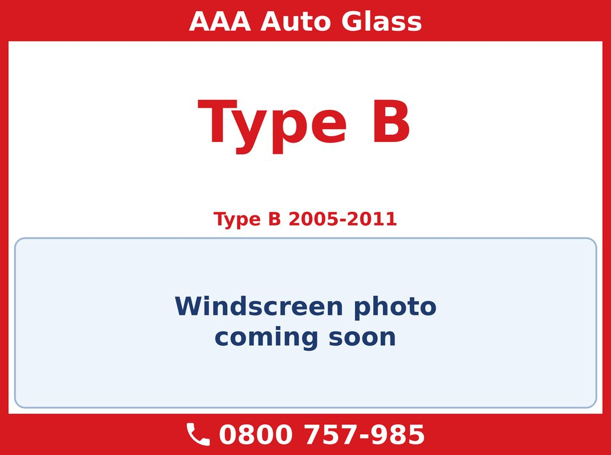
Type B: Toyota Yaris Hatch, [05- ] Acoustic, Topside Mould
📞 Call 0800 757-985 about Type B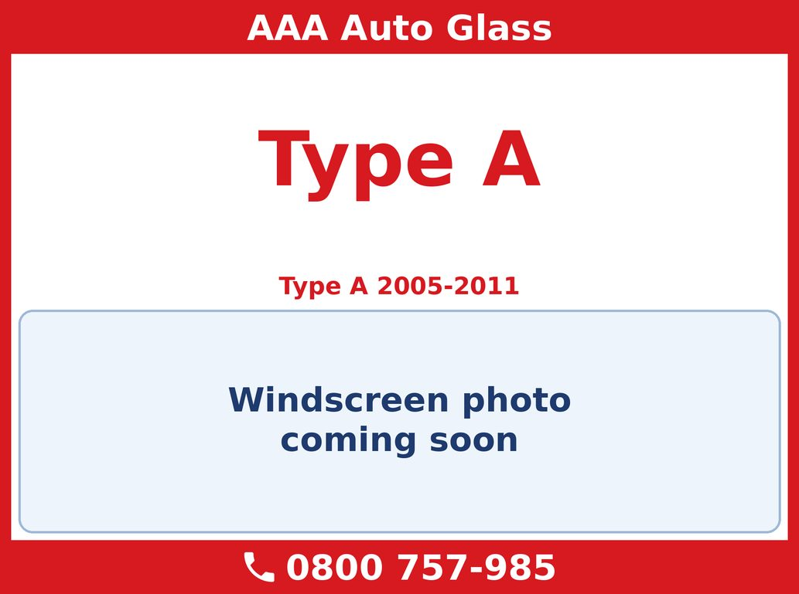
Type A: Toyota Yaris Hatch, [05- ] Topside Mould
📞 Call 0800 757-985 about Type ANot sure which one you have? Call us on 0800 757-985 with your year and what you can see behind the mirror, and we'll confirm the right windscreen for your Yaris.
Type A: Toyota Echo Sedan, Hatch, [99-05]
📞 Call 0800 757-985 about Type AWindscreen illustrations are for identification only, not exact fitment drawings. Vehicle photos, via Wikimedia Commons, cropped and placed on a white background: Toyota Yaris 2020-on photo: Alexander Migl / CC BY-SA 4.0. Toyota Yaris GR 2020-on photo: Alexander Migl / CC BY-SA 4.0. Toyota Yaris 2011-2020 photo: OSX / public domain.
Toyota Yaris Glass Specialists
The Toyota Yaris is one of Auckland's most common small cars — first cars, city commuters and fleet runabouts. We see the full spread: mid-2000s XP90 models, the 2011–2019 generation, and the current XP210 from 2020, plus Japanese-import Vitz variants.
Yaris windscreens are compact and quick to fit. The 2020-onward generation carries Toyota Safety Sense cameras on most grades, while earlier cars and Vitz imports are simple glass-only swaps. Yaris door glass for three and five-door bodies, rear quarter glass and hatch glass are everyday stock for us, and we keep import-specific variants too.
Related services: windscreen replacement, side & rear glass and ADAS windscreen work — all mobile, all across Auckland.
We stock glass for Toyota Yaris vehicles and can often fit you in the same day you call.
0800 757-985Call us first 📞 0800 757-985 — we'll guide you through the claim and make everything easier.
Insurance Claims →All our work on your Toyota Yaris carries a lifetime quality warranty for as long as you own the vehicle.
Mobile Service
A cracked Yaris screen shouldn't cost you the working week — our mobile technicians come to you anywhere in Greater Auckland, usually the same day. We bill your insurer direct and back the job with a lifetime workmanship warranty.
Back to all Toyota models · all makes & models · service areas across Auckland
Common Questions
What Yaris owners ask us before booking.
Yes — the Vitz is the Japanese-market Yaris and glass is largely shared. We stock the common variants and can confirm yours from the year and body style.
Yaris glass is among the most affordable we fit — small, common screens. Call with your model year for an exact quote; if you have comprehensive cover it may cost you nothing.
In most cases, yes. Yaris door glass is stock we carry, and a smashed side window is a security risk we prioritise. We also vacuum out broken glass inside the door.
It does — that generation uses a camera on the windscreen. We fit the correct Safety Sense glass and talk you through the recalibration step afterwards.
Yes — our warehouse at 133 Pilkington Road, Panmure (second building back from the road, opposite Geronimo Performing Arts) has four installation bays, and most work is done in Installation Bay C. Side and rear glass is often fitted while you wait; for windscreens, drop the vehicle off and we'll call you when it's ready. It's best to book or phone first on 0800 757-985, so we can have your glass ready and a glazier available when you arrive.